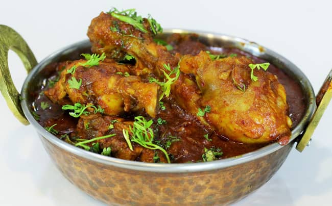
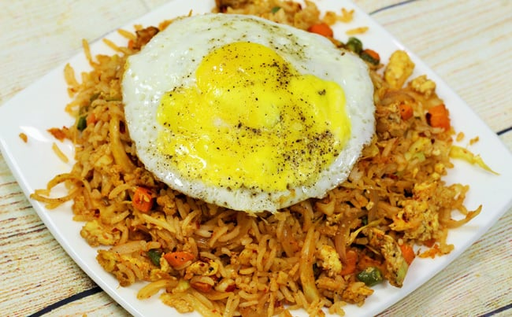
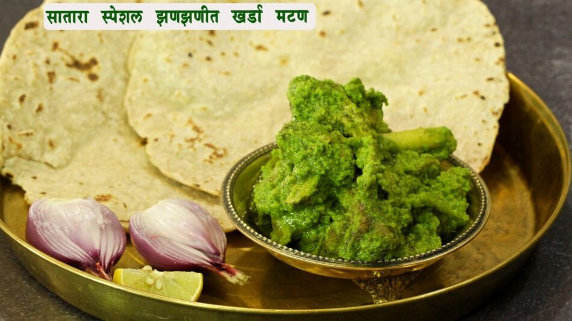
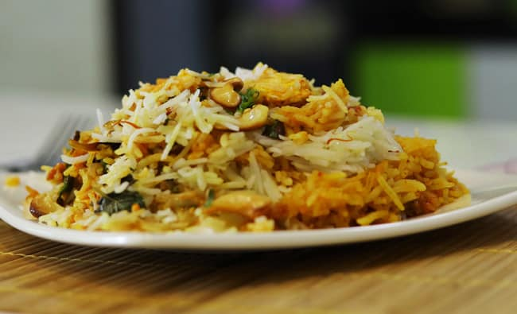

Inspired by the Kolhapuri cooking style, the Mutton Thali is complete with a Mutton Sukka, Rassa, Kheema, Alani, Bhakari and Rice. The Mutton is soft, succulent and properly cooked; The spicy flavour of the Rassa is unapologetically sinful, much like the Kheema. Overall a blissful indulgence for Mutton lovers. PRICE : 250 Rs./- Order Recipe
Soft succulent Mutton cooked to perfection with hand pounded coconut and onion. Appetising isn’t it ? Wait till you try the dish that will blow your mind. The soft meat falls off the bone easy and give it the headiness of the masala. It is sure to make it to your list of ‘must eat’ dishes. Enjoy it as an appetizer or, team it up with a bread. PRICE : 250 Rs./- Order Recipe
Chicken Shagoti is a wonderfully spicy preparation, typical to the Malvan style of cooking. It is cooked in freshly ground spices, poppy seeds, desiccated coconut and large red chilies. Drooling already? If youre ready to take your tastebuds on a roller coaster ride, then Shagoti it is! PRICE : 250 Rs./- Order Recipe
Anda chingari is a street food recipe. It is named as anda chingari as it is spicy. It is a very easy and simple recipe. It tastes just awesome. You can try this recipe at home and drop a comment for me. Do not forget to like, share and subscribe. PRICE : 250 Rs./- Order Recipe

Be a kid or a teenage or an adult or an oldie, chicken lovers trend all over the world at all times! One meat that is a favourite of all beyond belief! When cooked, it can be presented in many guises. Sauté it, fry it, toss it, bake it, steam it – eat it the way you want to. PRICE : 250 Rs./- Order Recipe

Egg fried rice is a very easy, simple and quick recipe. You can make it healthier by adding veggies of your choice. This is a popular street food. This can be a good change to your regular rice or fried rice. PRICE : 250 Rs./- Order Recipe

Kharda mutton is a Satara special recipe. This recipe is very easy and simple and tastes just yumm. This can be prepared with minimum ingredients and doesn’t need many efforts. This is a real quick recipe and looks also nice. This kharda gives nice taste to the recipe. PRICE : 250 Rs./- Order Recipe
A fish fry is a meal containing battered or breaded fried fish. It usually also includes french fries, coleslaw, hushpuppies, lemon slices, tartar sauce, hot sauce, malt vinegar and dessert. Some Native American versions are cooked by coating fish with semolina and egg yolk. PRICE : 250 Rs./- Order Recipe
Tandoor chicken is a much requested recipe. We are making this recipe in cooker as everybody can’t have tandoor or oven at home. This is a very easy recipe to be made in cooker. PRICE : 250 Rs./- Order Recipe
This delightfully delectable dish hails from the coastal region of Maharashtra, Konkan. Also known as Prawns Pulao, the Kolambi Bhaat is a prawn pilaf with prawns cooked in rice and coconut milk. The pleasant aroma of spices and the simmering hot prawns will get your tummy rumbling in an instant. PRICE : 250 Rs./- Order Recipe
Akkha masoor is traditional Maharashtrian recipe. This is very easy and simple. It requires simple ingredients available in your pantry PRICE : 250 Rs./- Order Recipe
Dodaka or ridge gourd is not that favourite sabzi. But if you try making dodaka in this way, I am sure it well a hit menu. Bharala dodaka or stuffed ridge gourd is a very easy and simple recipe. It tastes just awesome and doesn’t need lot many ingredients. PRICE : 250 Rs./- Order Recipe
Chana masala is an easy and simple recipe. This can a good lunch box option. It can be made from very few ingredients and tastes just awesome. PRICE : 250 Rs./- Order Recipe
Chana Bhatura is a spicy, tasty and a filling dish. In some places the curry is very spicy, at other places it has tangy taste and the consistency of the curry also varies from slightly thick to semi-dry and dry. This recipe has spicy flavors. PRICE : 250 Rs./- Order Recipe
Mataki rassa is a very easy and simple recipe. We already have seen 2-3 recipes of mataki. Here is another pungent and spicy version of mataki rassa. It tastes just awesome. PRICE : 250 Rs./- Order Recipe

Paneer biryani is a very popular recipe. can be a one dish meal. This is very easy, simple and tasty recipe. You can make this on this 31st December for those who don’t have non veg. PRICE : 250 Rs./- Order Recipe
Tawa pulao is a very easy and simple recipe. This is a very popular street food. This can be a good alternative to finish off your left over rice. PRICE : 250 Rs./- Order Recipe
Veg biryani is a popular dish. This can be a complete meal by itself as it contains lot of veggies and rice. This can be a one dish meal. Though multi step process and a lot of time consuming, it is worth a try as the end result is just mouth watering and delicious. PRICE : 250 Rs./- Order Recipe
Vegetable korma is a very easy and simple recipe. We already seen aloo korma recipe. Today we are making hotel style vegetable korma that tastes just awesome. You can make this recipe with the ingredients easily available in your pantry. This is Karnatak style korma I am preparing. PRICE : 250 Rs./- Order Recipe
Zunka is a traditional Maharashtrian recipe. This is very easy and simple recipe. This is a perfect option if you don’t have any sabzi at home and want to make a quick and tasty side dish. PRICE : 250 Rs./- Order Recipe